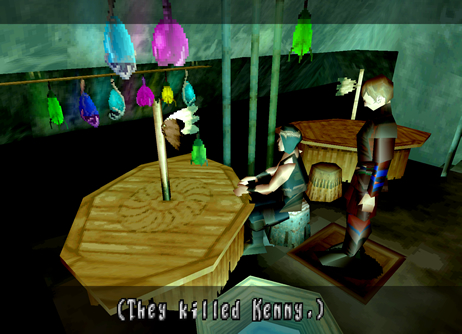
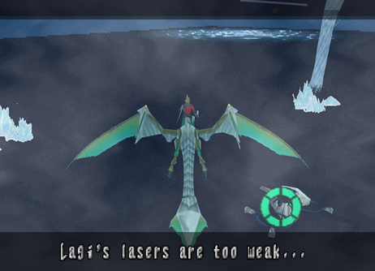
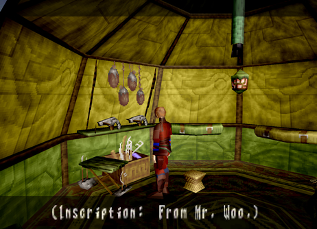
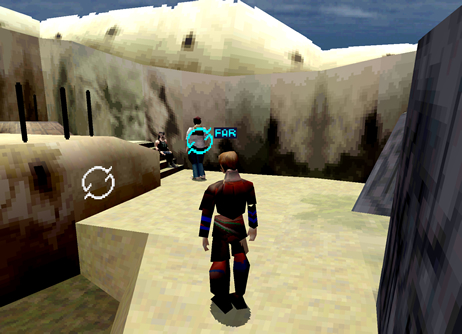
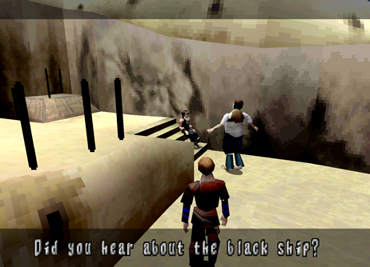
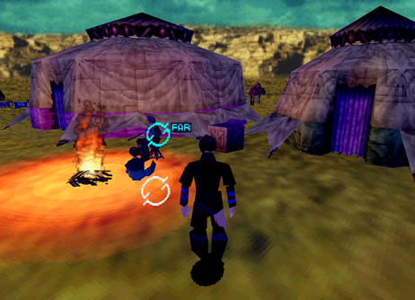

Secret and Optional NPC Dialogue
| Optional Conversation # 4 Disc: 2 Location: Village of Zoah
(Liberal District) Characters: Quitor and
traveller Criteria: When you first visit the Village of Zoah
you will see Quitor standing outside selling grain to a traveller. Stand
back and select them from afar to listen to their conversation. |
1. Examine the Traveler or Quitor from afar to get 2 different dialogue conversations. |
2. They argue over grain. I think Quitor can spare some more don't you think?! |


| Optional Conversation # 5 (Easter Egg) Disc: 2 Location: Village of Zoah
(Liberal District) Upstairs Jub's Bar Characters: None Criteria: At night go to Jub's Bar. Upstairs you
will find a table in the back with a little South Park Easter egg writen
on it. |
 1. Examine the table for a South Park Easter egg! |
| Optional Conversation # 6 (Secret) Disc: 2 Location: Georgius Characters: Edge Criteria: Once you get to Georgius and fly inside
the whirlwind, you can fly off to the side to find a lone drone. When
you examine it Edge will comment on the oddity and a bunch of tornadoes
will come and destroy it! |
 1. Examine the drone to get Edg's reaction. |
2. It will then be destroyed! |

| Optional Conversation # 7 Disc: 2 Location: Caravan Characters: Kou and Fei Criteria: After returning from Georgius with Paet's
parts go back to the Caravan and enter Kou and Fei's tent. Talk to Fei
normally/up close until she mentions not being afraid of the outside
world and that she misses you. This opens up two more hidden dialogue
options from afar. |
1. Examine Fei or Kou from afar for 2 dialogue conversations. |
2. Talk to Fei normally until she mentions not being afraid. This opens up 2 more dialogue options from afar. |


| Optional Conversation # 8 (Easter Egg) Disc: 2 Location: Caravan Characters: None Criteria: Go into An'jou's tent the one to the
right. Inside you will see a couple guns hanging on the wall. Upon examination
you will get a quick message. This is an easter egg concerning John
Woo movies! |
 1. Examine the guns for a John Woo movie Easter egg! |
| Optional Conversation # 9 (Missable after Uru) Disc: 2 Location: Village of Zoah
(Liberal District) Paet's workstation Characters: Paet and Bezer Criteria: Paet will show you an image of Uru and
Azel flying off in the distance. This is your next destination. So,
leave Zoah and enter Uru. Now, immediately leave Uru and go back to
the Village of Zoah and go see Paet again. You can see an optional conversation
between Paet and Bezer from afar. |
1. Examine Bezer or Paet for 2 different conversations. |
2. Paet asks Bezer if he's interested in Ancient Age ships. |


| Optional Conversation # 10 (Missable after Uru) Disc: 2 Location: Village of Zoah
(Liberal District) Aldo's house Characters: Aldo and Abner Criteria: Paet will show you an image of Uru and
Azel flying off in the distance. This is your next destination. So,
leave Zoah and enter Uru. Now, immediately leave Uru and go back to
the Village of Zoah and to Aldo's house. Right across from Paet. Talk
to Aldo and Abner from afar to hear their conversation. |
 1. Examine Aldo or Abner for 2 different conversations. |
 2. The Empire is getting closer to the Village of Zoah! |
| Optional Conversation # 11 (Missable after Uru) Disc: 2 Location: Village of Zoah
(Liberal District) Upstairs Jub's Bar Characters: Quitor and
Jephthah Criteria: Paet will show you an image of Uru and
Azel flying off in the distance. This is your next destination. So,
leave Zoah and enter Uru. Now, immediately leave Uru and go back to
the Village of Zoah and go to Juba's Bar at night. Go upstairs to find
Quitor and the Seeker Jephthah. Speak to them from afar to hear their
conversation. |
1. Examine Quitor or Jephthah for 2 different conversations. |
2. The two argue with each other. They're better off having an illuminated drink! |


| Optional Conversation # 12 (Missable after Uru) Disc: 2 Location: Caravan Characters: An'jou and
Enkak Criteria: Paet will show you an image of Uru and
Azel flying off in the distance. This is your next destination. So,
leave Zoah and enter Uru. Now, immediately leave Uru and go back to
the Caravan. Make sure it's nighttime. You will find An'jou and Enkak
sitting outside by the fire. Talk to them from afar to hear their conversation. |
 1. Examine An'jou or Enkak for 2 different conversations. |
2. Enkak is curious about stories concerning the dragon. |

| Optional Conversation # 13 (Missable after Uru) Disc: 2 Location: Caravan Characters: Fei and Marcus
the Coolia Criteria: Paet will show you an image of Uru and
Azel flying off in the distance. This is your next destination. So,
leave Zoah and enter Uru. Now, immediately leave Uru and go back to
the Caravan. Make sure it's daytime. You will find Fei washing her favorite
coolia. Speak to them from afar to hear their conversation. |
1. Examine Fei or the Coolia for 2 different conversations. |
2. Fei washes up Marcus, her favorite Coolia! |